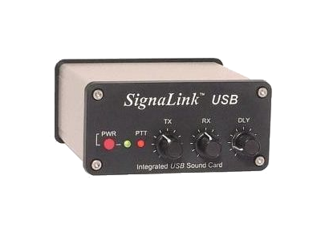

In order for more usage for our 70cm repeater it has been proposed to use it at least some of the time for digital keyboard to keyboard coms.
We will be using the free fldigi in MFSK64 mode for the communications.
You will need at minimum a 70cm radio that has been setup to use our repeater that is
a frequency of 442.750MHz + offset and a tone of 156.7Hz
You will also need a PC or raspberry pi and an interface to go between the radio and PC
That could be one of several options
Either a signalink

Or a digirig
These are the 2 easiest solutions as the supply ready made cables for many radios.
click on the pictures for a link where to buy
For an option that may take a bit of soldering of cables you could use
A usb sound dongle